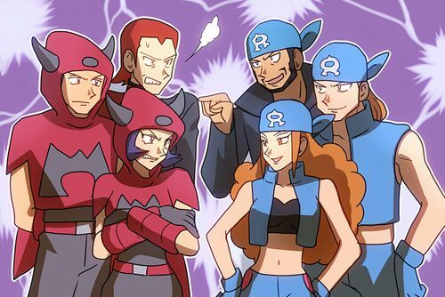
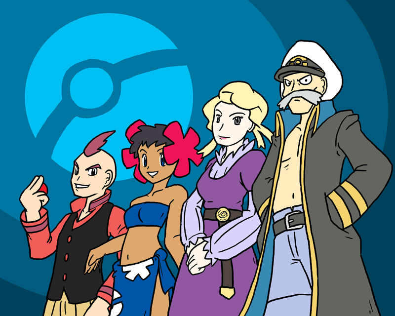

.png)

Capa do jogo pokémon Emerald
Capa do jogo pokémon Sapphire
Capa do jogo pokémon Ruby
Rayquaza
Kyogre
Groudon
| Desenvolvedora | Game Freak |
|---|---|
| Publicadora | The Pokémon Company, Nintendo |
| Diretor | Shigeki Morimoto |
| Produtores | Hiroyuki Jinnai, Hitoshi Yamagami, Gakuji Nomoto, Hiroaki Tsuru |
| Escritores | Akihito Tomisawa, Hitomi Sato, Toshinobu Matsumiya |
| Programador | Hisashi Sogabe |
| Artista | Ken Sugimori |
| Compositores | Gō Ichinose, Junichi Masuda, Morikazu Aoki, Hitomi Sato |
| Série | Pokémon |
| Plataforma | Game Boy Advance |
| Lançamento |
JP 16 de setembro de 2004 AN 1 de maio de 2005 EU 21 de outubro de 2005 AU 9 de junho de 2005 |
| Gênero | RPG |
| Modos de jogo | Um jogador, multijogador |
Personagens de Pokémon
Mapa de Hoenn
Os 3 lendários
Batalha Pokémon
História
Em Pokémon Emerald, Sapphire e Ruby, os jogadores são introduzidos à região de Hoenn, uma terra rica em diversidade geográfica e cultural. O protagonista, um jovem treinador Pokémon, inicia sua jornada em uma pequena cidade rural e rapidamente se envolve em uma série de eventos que moldarão o destino de Hoenn.
 A história começa com o protagonista recebendo seu primeiro Pokémon do Professor Birch, um renomado especialista em Pokémon da região. Logo após, o protagonista se vê envolvido em um confronto com a Equipe Aqua e a Equipe Magma, duas organizações criminosas com objetivos opostos: a Equipe Aqua busca expandir os mares e oceanos, enquanto a Equipe Magma busca expandir a terra firme.
O enredo se desenrola à medida que o jogador viaja pela vasta região de Hoenn, enfrentando desafios como os líderes de ginásio, cada um especializado em um tipo de Pokémon diferente. A conquista das insígnias de ginásio é essencial para desafiar a Elite Four e o atual Campeão da Liga Pokémon.
Durante sua jornada, o jogador encontra uma variedade de personagens interessantes, como o rival, um treinador determinado a superar o protagonista a qualquer custo, e os membros da Elite Four, os treinadores mais poderosos de Hoenn.
 Um dos aspectos mais marcantes da história é o conflito entre Kyogre e Groudon, dois lendários Pokémon que representam o oceano e a terra, respectivamente. A Equipe Aqua e a Equipe Magma tentam despertar esses Pokémon lendários para realizar seus objetivos de expandir o mar e a terra. O protagonista, juntamente com a ajuda de Rayquaza, um terceiro lendário, deve intervir para evitar uma catástrofe que poderia destruir Hoenn.
À medida que a história se desenrola, o jogador explora locais emblemáticos de Hoenn, como a misteriosa Caverna da Origem, o majestoso Monte Chimney e a tecnológica cidade de Mauville. Além disso, o jogador tem a oportunidade de participar de eventos especiais, como concursos de Pokémon e a emocionante Battle Frontier, uma série de desafios pós-jogo que testam as habilidades de treinamento do jogador.
No final, após enfrentar a Elite Four e o Campeão da Liga Pokémon, o jogador é coroado como o novo Campeão de Hoenn, mas a jornada não termina aí. Ainda há muito para explorar e descobrir em Hoenn, desde a captura de Pokémon lendários até a conclusão da Pokédex e a busca por desafios cada vez mais difíceis. Em Pokémon Emerald, Sapphire e Ruby, a aventura nunca acaba, e os treinadores estão sempre prontos para enfrentar novos desafios e descobrir novas aventuras.
Jogabilidade
Exploração:
Assim como em outros jogos da série, a exploração é uma parte central. Os jogadores viajam pela região de Hoenn, que é vasta e diversificada, com cidades, florestas, cavernas, mares e outras paisagens únicas.

Cidade
Cidade
Cidade
Cidade
Cidade
Cidade
Vulcão
Floresta
Floresta
Caverna
Caverna
Caverna
Batalhas Pokémon:
A mecânica de batalha é a essência dos jogos Pokémon. Os jogadores capturam e treinam Pokémon para batalhar contra treinadores e líderes de ginásio. Em Ruby, Sapphire e Emerald, as batalhas seguem o formato clássico baseado em turnos da série, onde os jogadores escolhem movimentos para seus Pokémon e os comandos são executados alternadamente entre o jogador e o oponente.
Ginásios Pokémon:
Hoenn é o lar de oito ginásios Pokémon, cada um liderado por um líder de ginásio especializado em um tipo específico de Pokémon. Os jogadores precisam desafiar e derrotar esses líderes de ginásio para obter insígnias, que são necessárias para avançar na história.
Ruby e Sapphire apresentam duas equipes antagonistas:
Magma e Equipe Aqua, respectivamente. Emerald combina ambas as equipes em uma única narrativa mais elaborada. Os jogadores precisam impedir os planos dessas equipes enquanto avançam na história.
Contest Halls (Salões de Concurso):
Uma adição interessante em Ruby, Sapphire e Emerald são os Contest Halls, onde os treinadores podem participar de Concursos Pokémon. Estes são eventos competitivos onde os Pokémon são julgados com base em seus atributos e movimentos em vez de apenas em batalhas.
Diversidade de Pokémon:
Com mais de 380 Pokémon disponíveis para capturar e treinar, há uma grande diversidade de espécies para os jogadores escolherem e experimentarem em suas equipes.
Interação com o mundo exterior:
Ruby, Sapphire e Emerald também introduziram algumas mecânicas de interação com o mundo exterior, como o uso do HM (Hidden Machine) para ensinar aos Pokémon movimentos especiais que podem ser usados fora das batalhas, como cortar árvores ou surfar em corpos d'água.
Conectividade:
Embora a conectividade online não seja mais suportada devido à idade dos jogos, Ruby, Sapphire e Emerald apresentaram uma conectividade local onde os jogadores podiam trocar Pokémon, batalhar entre si e participar de concursos com amigos que possuíam cópias dos jogos.
Opinião
Como alguém que jogou Pokémon Emerald, Ruby e Sapphire, posso dizer que essas experiências foram incrivelmente gratificantes e deixaram uma marca duradoura na minha jornada como treinador Pokémon. Cada um desses jogos traz uma combinação única de elementos que os tornam especiais e memoráveis.
Primeiramente, a região de Hoenn é um espetáculo à parte. Desde as vastas e diversas paisagens até as cidades pitorescas e rotas desafiadoras, Hoenn proporciona um cenário visualmente deslumbrante e diversificado. A variedade de ambientes, como florestas, cavernas, montanhas e áreas aquáticas, cria uma sensação de aventura contínua e exploração constante. A trilha sonora é outro ponto alto, com melodias que capturam perfeitamente o espírito de cada local e momento do jogo.
Os Pokémon introduzidos na terceira geração são, sem dúvida, alguns dos mais icônicos e bem-desenhados de toda a franquia. Desde os iniciais adoráveis como Treecko, Torchic e Mudkip até os lendários majestosos como Groudon, Kyogre e Rayquaza, cada criatura tem seu próprio charme e funcionalidade única nas batalhas. A mecânica de habilidades e naturezas, introduzida nesses jogos, adicionou uma camada extra de estratégia e personalização, permitindo aos jogadores desenvolver times que refletissem seu estilo de jogo.
O enredo dos jogos também merece destaque. As narrativas de Ruby e Sapphire, focadas na rivalidade entre as equipes Aqua e Magma, trazem uma profundidade e complexidade que prendem a atenção do jogador. Pokémon Emerald eleva isso a um novo patamar, unindo os elementos das duas versões anteriores e introduzindo a intrigante Battle Frontier. Este local não só testa as habilidades dos jogadores, mas também oferece um desafio contínuo, incentivando a melhoria e a inovação constante nas estratégias de batalha.
Outro ponto que me cativou foi a implementação de inovações tecnológicas e de jogabilidade. As bases secretas, que permitem aos jogadores criar seus próprios espaços personalizados, e as competições de Contests, que oferecem uma alternativa divertida e criativa às batalhas tradicionais, são exemplos brilhantes de como a série soube expandir e diversificar a experiência de jogo.
Por fim, a conectividade e a interação entre jogadores foram muito aprimoradas. A possibilidade de trocar Pokémon e batalhar com amigos adiciona uma dimensão social que é fundamental para a longevidade e diversão dos jogos. Essas interações não só fortalecem os laços entre os jogadores, mas também incentivam a coleção completa e a descoberta de novas estratégias e combinações.
Em resumo, Pokémon Emerald, Ruby e Sapphire são obras-primas que não só preservaram a magia dos jogos anteriores, mas também introduziram inovações que enriqueceram a experiência global. A região de Hoenn, os novos Pokémon, as mecânicas aprimoradas e as opções de conectividade fazem desses jogos uma parte essencial e inesquecível da franquia Pokémon. Jogá-los foi uma aventura incrível que certamente recomendo a qualquer fã da série.